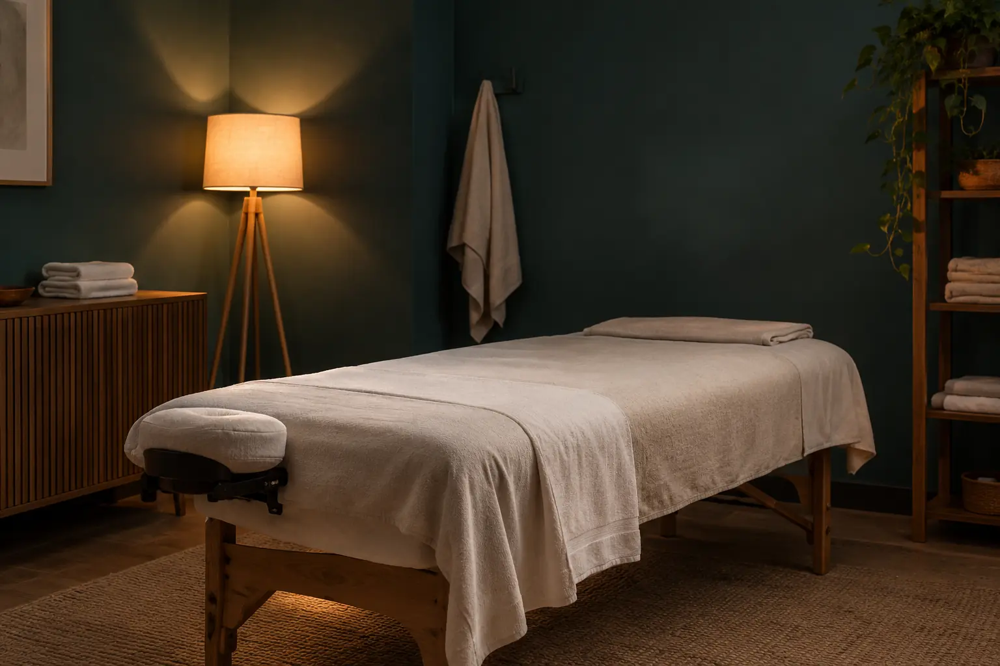

Masažo gidas: kūno ir veido paslaugos, eiga bei kompetencijos ribos
Autorius: Madbeauty redakcija · Numatyta 2026 m. lapkričio 8 d. 10:00 (Lietuvos laiku)
Kaip suprasti masažo tikslą, zonas ir seanso apimtį, atskirti poilsio paslaugą nuo sveikatos priežiūros ir prieš vizitą sutarti dėl svarbiausių sąlygų.

Masažą rinkitės pagal keturis dalykus: ko tikitės iš vizito, kokia kūno sritis bus masažuojama, kas įeina į paslaugą ir kokios yra jos kompetencijos ribos. Žodis „atpalaiduojantis“ nusako siūlomą vizito tikslą, bet savaime nepatvirtina gydymo ar konkretaus rezultato. Pavadinimas neatsako ir į praktinius klausimus: kokios zonos įtrauktos, kokia technika taikoma ar kas ją atlieka.
Masažo tikslas: poilsis ar sveikatos paslauga?
Pirmiausia atskirkite kosmetinės ar savijautos paslaugos tikslą nuo sveikatos priežiūros. NVSC negydomąjį masažą priskiria grožio paslaugų veiklai, o asmens sveikatos priežiūros paslaugas apibrėžia atskirai. Jei siūloma paslauga pagal savo pobūdį yra medicininė, vien grožio veiklos leidimo-higienos paso nepakanka: svarbu tikrinti konkrečios paslaugos ir ją teikiančio specialisto bei įstaigos statusą. Reklaminis pavadinimas pats savaime paslaugos teisinės rūšies nenustato. Daugiau apie šią ribą paaiškina NVSC informacija apie grožio paslaugų veiklą ir NVSC paaiškinimas apie grožio ir sveikatos paslaugas.
Masažo rūšys ir jų paskirtis skiriasi; vien pavadinimas nėra pagrindas tikėtis, kad bus gydoma liga ar garantuotai pasikeis konkretus simptomas. NCCIH apžvalga pažymi, kad masažo tyrimų rezultatai priklauso nuo tirtos būklės ir kad kai kurių taikymų įrodymai riboti arba rodo trumpalaikį poveikį. Tai nėra konkretaus metodo, teikėjo ar individualaus tinkamumo patvirtinimas. NCCIH apžvalga apie masažo terapiją
- Jei ieškote poilsio, lyginkite vizito aplinką, numatytą intensyvumą ir tai, ar pasiūlymas aiškiai įvardija, kas bus daroma.
- Jei svarbi konkreti kūno vieta, ieškokite aiškiai nurodytos zonos ir patikrinkite, ar kitos sritys įtrauktos.
- Jei tikslas yra spręsti sveikatos problemą, grožio paslaugos pavadinimo nelaikykite gydymo pažadu. Paslaugos pobūdį ir reikiamą specialistą vertinkite pagal konkrečią situaciją.
Kūno zona ir į paketą įtraukti darbai
„Nugaros masažas“, „viso kūno masažas“ ir „veido masažas“ pirmiausia padeda suprasti zoną, bet ne visą paslaugos sudėtį. Pavyzdžiui, „visas kūnas“ nebūtinai reiškia veidą, o veido paslaugos aprašyme gali būti arba nebūti dekoltė ar nugaros. Prieš rinkdamiesi išsiaiškinkite, kuri vieta bus masažuojama, kokie papildomi darbai ar priemonės įtraukti ir ar siūloma trukmė apima visą vizitą, ar tik masažo dalį.
Du 2026 m. spalio 9 d. peržiūrėti Treatwell meniu rodo, kodėl verta skaityti visą aprašymą: „Prisilietimo harmonija“ atskirai nurodė veido masažo variantus su dekoltė ir su nugara, o „The Palm Alchemy“ moterims skirtame meniu išskyrė nugaros, kaklo ir pečių masažą greta viso kūno variantų. Tai konkrečių teikėjų tuo metu pateikti pasiūlymai, o ne bendras masažo standartas ar dabartinės pasiūlos garantija. Peržiūrėkite „Prisilietimo harmonijos“ meniu ir „The Palm Alchemy“ meniu kaip apimties pavyzdžius, o ne kaip kainų ar paslaugų palyginimą.
- Paskirtis: ar aprašoma poilsio patirtis, konkreti technika, ar sveikatos priežiūros paslauga?
- Zona: ar įvardyta nugara, kaklas ir pečiai, veidas, dekoltė, visas kūnas ar kita vieta?
- Sudėtis: ar įtrauktos papildomos zonos, priemonės arba kiti procedūros komponentai?
- Laikas ir kaina: kokia trukmė nurodyta, kas į ją įskaičiuota ir kokiomis sąlygomis taikoma kaina?
- Teikėjas: ar paslaugą atliekantis asmuo ir jo kvalifikacija atitinka paslaugos pobūdį?
Vizito eiga ir komfortas
Paslaugų eiga skiriasi, todėl prieš vizitą perskaitykite konkretaus teikėjo sąlygas. Prieš pradžią susitarkite dėl masažuojamų zonų, vizito trukmės, spaudimo, naudojamų priemonių ir privatumo: kaip reikės pasiruošti, persirengti ar pasakyti, kad norite pakeisti intensyvumą. Jei turite sveikatos klausimų, jautrumų ar abejonių dėl tinkamumo, išsakykite juos prieš procedūrą ir paprašykite paaiškinti, ar ši paslauga tam skirta.
Vizito metu pasakykite, jei jaučiate diskomfortą arba norite koreguoti spaudimą ar padėtį. Po masažo vadovaukitės konkretaus teikėjo pateikta informacija; universali priežiūros instrukcija neturėtų pakeisti nurodymų, susijusių su konkrečia paslauga.
Atpalaiduojantis masažas: tikslas nėra visas aprašas
„Atpalaiduojantis“ paprastai nusako siūlomą vizito patirtį, o ne vieną visur vienodą techniką. Palyginkite jį su kitomis aprašo dalimis: „nugaros“ ar „viso kūno“ nusako zoną, o metodo ar papildomo komponento pavadinimas gali nusakyti kitą paslaugos aspektą. Vienas pasiūlymas gali jungti kelias šias dimensijas, todėl vien iš žodžio „atpalaiduojantis“ neįmanoma nustatyti spaudimo, priemonių, zonų ar trukmės.
Pavyzdžiui, jei norite ramaus vizito, bet svarbiausia yra nugara ir pečiai, rinkitės tik tada, kai aprašyme tos zonos aiškiai įvardytos arba teikėjas patvirtina, kad jos įtrauktos. Jei pasiūlymas nurodo tik „atpalaiduojantis masažas“, turite teisę prieš registraciją išsiaiškinti, ką tiksliai gausite. O jei ieškote pagalbos dėl sveikatos sutrikimo, pirmiausia įvertinkite, ar jums reikia sveikatos priežiūros specialisto, o ne spręskite pagal paslaugos reklaminį pavadinimą.
Procedūrų aprašai kataloge: Atpalaiduojantis masažas. Miestą ir realaus teikėjo pasiūlymą pasirinkite kataloge, kai tokia pasiūla pateikta.
Susiję gidai
Šaltiniai
- Prisilietimo harmonija · veido masažo variantai · www.treatwell.lt
- The Palm Alchemy · masažų apimtis · www.treatwell.lt
- NVSC · grožio veiklos apimtis · nvsc.lrv.lt
- NVSC · grožio ir sveikatos paslaugų riba · nvsc.lrv.lt
- NCCIH · masažo įrodymai ir rizikos · www.nccih.nih.gov